Getting Started: Navigating the Infrastructure
In this introductory lab, you will familiarize yourself with the dCloud environment and infrastructure topology used throughout the rest of the workshop. You will connect to the lab nodes, explore the provided workspace, and verify that the core Kubernetes and Isovalent tooling is installed and ready for upcoming exercises.
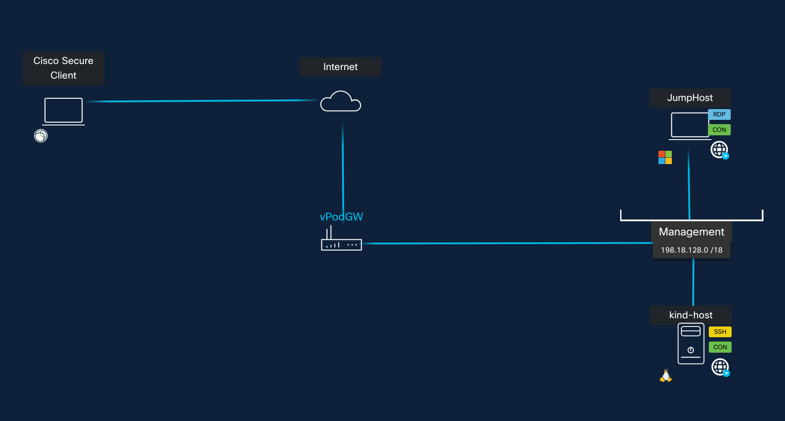
Lab Environment Overview
The dCloud lab consists of two primary nodes:
- Jumphost: Windows 11 workstation with basic client tools (RDP access, browser, SSH utilities)
- kind-host: Ubuntu 24.04 server hosting the Kubernetes-in-Kind cluster and all required tooling for the labs.
Access Credentials
Use the following credentials to connect to the lab environment:
| Node | IP Address | Username | Password |
|---|---|---|---|
| kind-host | 198.18.128.50 | dcloud | C1sco12345 |
| jumphost | 198.18.133.11 | admin | C1sco12345 |
Connecting to the Lab
There are two supported ways to access the environment:
- Option 1: RDP into Jumphost (Recommended) Connect Directly through dCloud portal using Remote Desktop.
- Option 2: VPN Access VPN into dCloud and connect directly from youe own machine.
Refer to your dCloud session details for the appropriate access method.
Tasks
Task 1: Connect to kind-host via SSH
Once connected to the Jumphost (or via VPN), open a terminal or PuTTY session and SSH into the Kubernetes host:
ssh dcloud@198.18.128.50
Login details
- Username: dcloud
- Password C1sco12345
Expected Result:
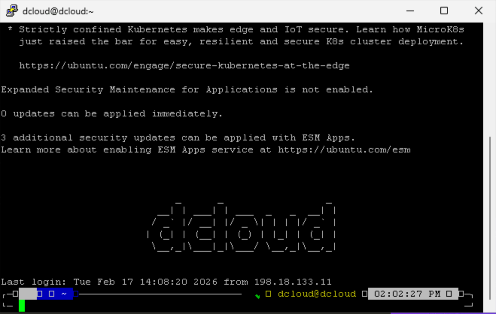
1.2 Using TTYD terminal on Chrome browser
As an alternative, you can access a CLI terminal directly in the browser in https://198.18.128.50:9443.
The bookmarks bar includes a direct link named KinD Terminal as well.
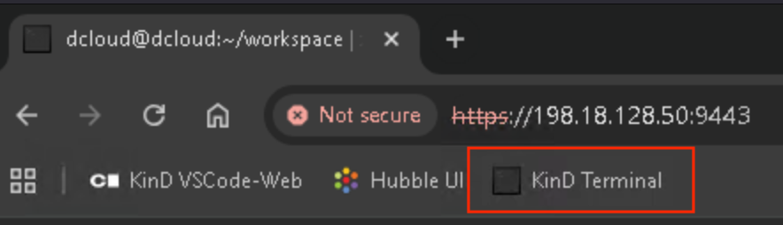
Expected Result:
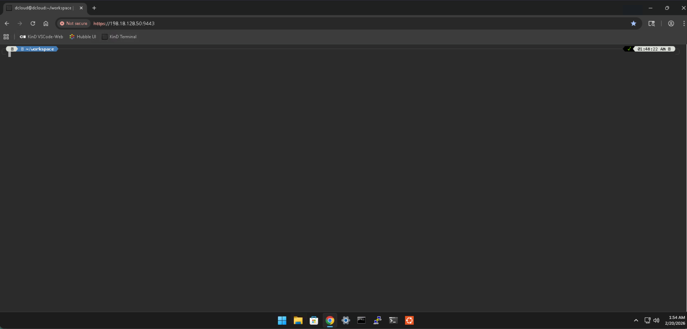
Task 2: Explore the workspace directory
All lab materials are organized under the workspace directory.
Run the following cli commands
cd ~/workspace
tree -L 1
You will see the following folders
- html5
- k8s
- kind
- python
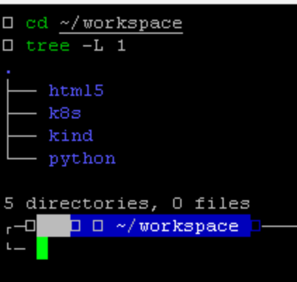
Feel free to browse these directories to understand the structure and content provided for later labs.
Task 3: Verify Docker Tooling
Docker is required to run container-based workloads in the lab.
3.1 Check Docker CLI
Run:
docker ps
Expected output (example):
CONTAINER ID IMAGE COMMAND CREATED STATUS PORTS NAMES
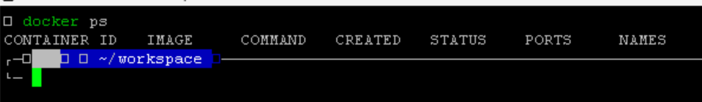
This indicates Docker is installed (even if no containers are currently running).
3.2 Check Docker Compose
Run:
docker compose version
Example output:
Docker Compose version v5.0.2
This confirms Compose support is available.
Task 4: Verify Kubernetes Tooling
The core Kubernetes toolchain is pre-installed on kind-host.
4.1 KinD CLI
Run:
kind version
Example output:
kind v0.31.0 go1.25.5 linux/amd64
4.2 Kubectl CLI
Run:
kubectl version
Example output
# Output
Client Version: v1.35.1
Kustomize Version: v5.7.1
The connection to server localhost:8080 was refused - ...
Note: At this stage, the cluster may not yet be running, so connection warnings are expected.
4.3 helm CLI
Run:
helm version
Example output:
version.BuildInfo{Version:"v4.1.1", GitCommit:"5caf...",...}
4.4 Verify Node.js and npm are installed
Run:
node --version
npm --version
Example output:
# node
v24.13.1
#npm
11.8.0
Optional (nice-to-have) if you want to confirm npm can install packages without surprises:
npm config get registry
output:
https://registry.npmjs.org/
Task 5: Verify Isovalent (Cilium & Hubble) tooling
5.1 Cilium CLI
Run:
cilium version
Example output:
cilium-cli: v0.19.0 compiled with go1.25.5 on linux/amd64
cilium image (default): v1.18.5
cilium image (stable): v1.19.0
cilium image (running): unknown. Unable to obtain ...
At this point, “running unknown” is acceptable until the cluster is started in later labs.
5.2 Hubble CLI
Run:
hubble version
Example output:
hubble v1.18.6@HEAD-95..... go1.25.6 on linux/amd64
Task 6: Access the Code-Server IDE
The lab includes code-server, which provides a browser-based Visual Studio Code environment.
Task 6.1 Open Code-Server in Chrome
From the Jumphost, open Chrome and navigate to:
https://198.18.128.50:8443/
You should see a login page similar to:
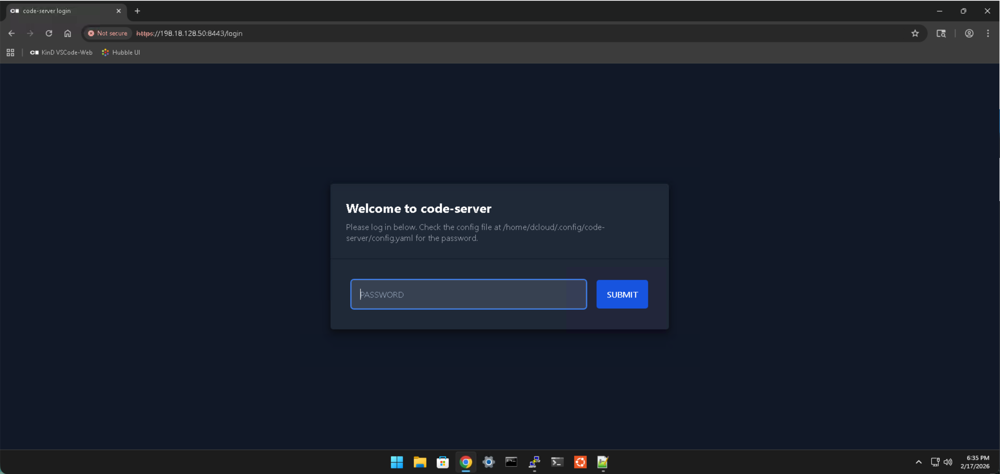
Login password:
- C1sco12345,
Task 6.2 Open Workspace Folder
Once inside code-server:
- Go to the "File" menu
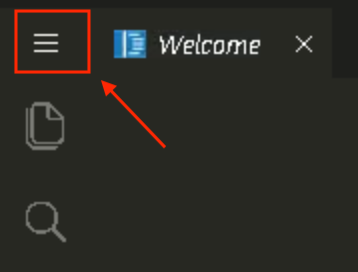
.- Select the File->Open Folder
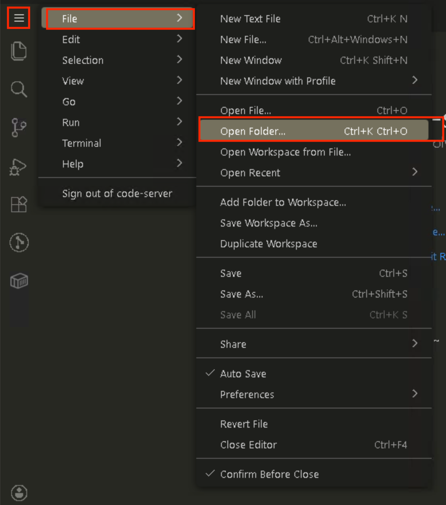
- Enter the following path
/home/dcloud/workspace/
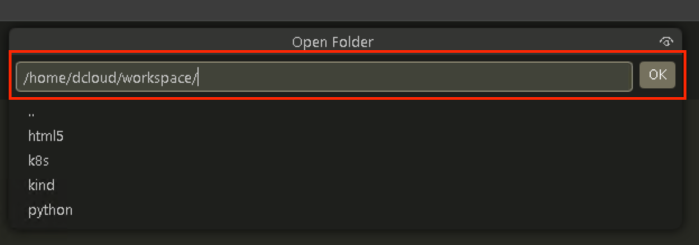
- Click Ok
The workspace should now appear in the Explorer panel:
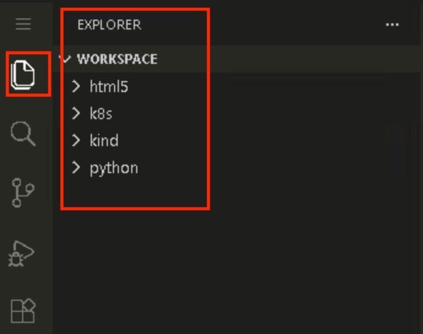
Lab Completion
CONGRATULATIONS! This complete the Lab 0
You are now connected, oriented, and ready to begin the next lab exercises.